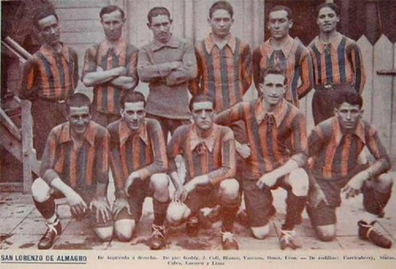

Los colores que eligió el padre Lorenzo Massa, que terminaron reemplazando al “borravino” de los tiempos iniciales, tienen que ver con lo religioso. Como tantas cosas que acompañan a la historia de San Lorenzo. Se dice que el cura salesiano se inspiró en el azul y rojo del manto de la Virgen María Auxiliadora para darle vida al eterno azulgrana que se transformó en parte esencial de este club. Así, con el correr del tiempo, la casaca del Ciclón fue mutando (aunque siempre se vuelve al diseño original) y nunca dejó de enamorarnos. Tuvo cuello acordonado en el amateurismo, se convirtió en camisa abotonada para la gloria de Los Matadores y se sumó a la moda del piqué para los títulos de los 70’s. Además, resultó pionera del marketing: lució la primera publicidad en el frente, cuando los caramelos Mu-Mu fueron sponsor de aquella gesta multitudinaria del Ascenso. Vinieron las distintas marcas (prácticamente todas las líderes) y sus diferentes modelos, con bastones más anchos o más angostos, con alguna que otra revolucionaria (¿cómo olvidar aquella polémica negra y amarilla, sólo utilizada una vez, contra River, en el año 2000?) y cada una con su particular recorrido. La clásica suplente siempre fue blanca, con algún toque azul, preferentemente. Y en el costado, del lado del corazón, el escudo o un CASLA reluciente. Desde el Sapito Villar (el que más veces pudo lucirla) hasta el nigeriano Félix Orode (que la vistió apenas unos minutos, en el clásico contra Huracán), la sensación nunca cambia: llevar la azulgrana sobre la piel supone un privilegio intransferible. Y ciertamente inolvidable...
